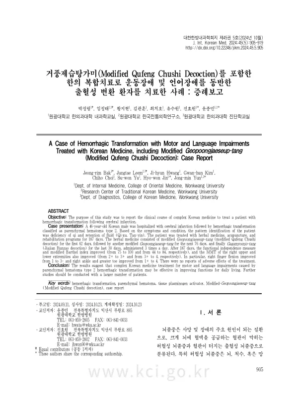

A Case of Hemorrhagic Transformation with Motor and Language Impairments Treated with Korean Medicine, including Modified Geopoongjaeseup-tang (Modified Qufeng Chushi Decoction): Case Report
Bak Jr, Leem J, Hwang Jh, Kim Gh, Choi C, Yu Sw, Jin Hw, Yun Jm
The Journal of Internal Korean Medicine 45(5):905-919

첫 장 · 오픈액세스First page · open access
논문 소개Summary
뇌경색을 치료하다 보면 막힌 혈관이 다시 열리면서 경색 부위에 출혈이 생기기도 합니다. 이를 출혈성 변환이라 하고, 그중 혈종이 경색 범위를 넘어 부종 효과를 내는 것이 실질 혈종 2형입니다. 예후가 나쁜 쪽에 속합니다.
급성 허혈성 뇌졸중에는 재조합 조직플라스미노젠활성제를 쓴 정맥내 혈전용해술이 효과적인 치료로 인정받지만 출혈 합병증의 위험이 늘 따릅니다. 출혈성 변환의 발생률은 7~10%로 추정되고, 그중 실질 혈종 2형은 병변이 크고 증상을 동반할 가능성이 높아 사망률과 3개월 뒤 치명도 악화에 관련이 큽니다. 그런데 위험인자와 양상이 워낙 다양해 표준 치료가 제시되지 못한 상태입니다.
46세 남성이 좌측 기저핵 급성 뇌경색으로 혈전용해술을 받은 당일 출혈성 변환이 생겨, 종괴 효과까지 진행한 뒤 입원했습니다. 증상과 상태로 보아 기허와 담음으로 변증했습니다. 187일 동안 한약과 침, 재활 프로그램을 받았습니다. 한약은 거풍제습탕가미를 처음 62일, 구성을 달리한 거풍제습탕가미를 이어 76일, 마지막 30일은 가감윤조탕을 하루 세 번 복용했습니다.
187일 뒤 기능적 독립성 측정이 75점에서 100점으로, 수정 바델 지수가 44점에서 84점으로 올랐습니다. 도수근력검사는 오른쪽 상지가 2+에서 3+로, 오른쪽 하지가 3+에서 4로 올랐습니다. 특히 오른손 손가락 굽힘이 1에서 3-로, 오른쪽 발목과 엄지가 1+에서 4로 올라 변화가 컸습니다. 치료로 인한 부작용은 보고되지 않았습니다.
숫자가 뜻하는 바를 옮기면 이렇습니다. 바델 지수 44점은 일상생활의 절반 이상을 남에게 기대야 하는 상태이고 84점은 대부분을 스스로 하는 상태입니다. 손가락이 겨우 움찔하던 것이 중력을 이기고 굽는 데까지 왔습니다.
한계는 증례 하나라는 점입니다. 뇌졸중 뒤 187일은 자연 회복이 상당히 일어나는 기간이기도 하므로 이 경과가 치료 때문인지 가를 수 없습니다. 저자들은 더 많은 환자를 대상으로 한 연구가 필요하다고 적었습니다.
In the course of treating cerebral infarction, a reopened vessel can bleed into the infarcted territory. This is haemorrhagic transformation, and the form in which the haematoma exceeds the infarct and exerts mass effect is parenchymal haematoma type 2. It falls on the poorer side of the prognostic range.
A 46-year-old man was admitted with haemorrhagic transformation of parenchymal haematoma type 2 following cerebral infarction. Symptoms and condition gave a pattern identification of qi deficiency with fluid retention. Over 187 days he received herbal medicine, acupuncture and rehabilitation. The herbal treatment was modified Geopoongjaeseup-tang for the first 62 days, a differently composed modified Geopoongjaeseup-tang for the next 76, and Gagamyoonjo-tang for the final 30, taken three times daily.
After 187 days the Functional Independence Measure had risen from 75 to 100 and the modified Barthel Index from 44 to 84. Manual muscle testing improved from 2+ to 3+ in the right upper extremity and from 3+ to 4 in the right lower extremity. The largest changes were in right finger flexion, from 1 to 3−, and in the right ankle and great toe, from 1+ to 4. No adverse effects of treatment were reported.
Translating the numbers: a Barthel Index of 44 means depending on others for more than half of daily activities, and 84 means doing most of them unaided. Fingers that could barely twitch came to flex against gravity.
The limitation is that this is a single case. One hundred and eighty-seven days after a stroke is also a period in which substantial natural recovery occurs, so this course cannot be attributed to the treatment. The authors call for studies with larger numbers of patients.
인용Cite
Bak Jr, Leem J, Hwang Jh, Kim Gh, Choi C, Yu Sw, Jin Hw, Yun Jm. A Case of Hemorrhagic Transformation with Motor and Language Impairments Treated with Korean Medicine, including Modified Geopoongjaeseup-tang (Modified Qufeng Chushi Decoction): Case Report. The Journal of Internal Korean Medicine. 2024;45(5):905-919. doi:10.22246/jikm.2024.45.5.905